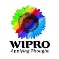
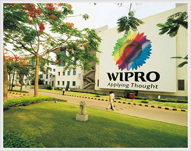
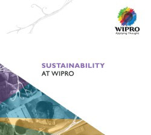
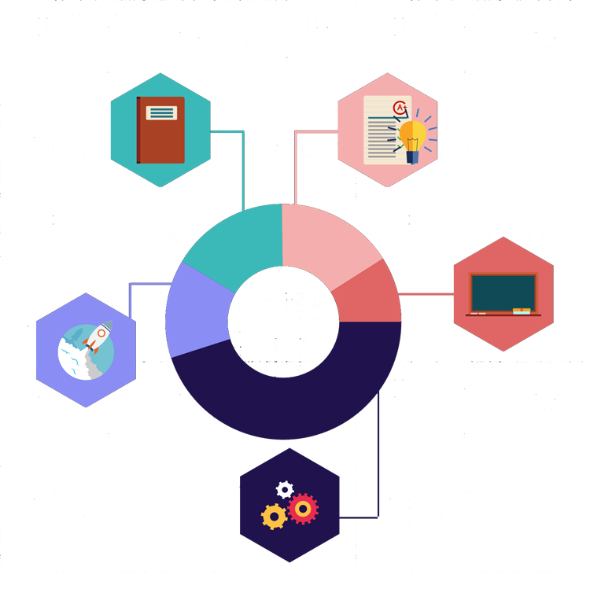

Overview

Wipro Ltd (NYSE:WIT) is a global information technology, consulting and outsourcing company with 160,000+ workforce serving clients in 175+ cities across 6 continents. The company posted revenues of $7.6 billion for the financial year ended Mar 31, 2015. Wipro-applying-thoughtWipro helps customers do business better by leveraging our industry-wide experience, deep technology expertise, comprehensive portfolio of services and vertically aligned business model.
Alliances
At Wipro, Strategic Partnerships are one of the core pillars of business objectives that help our customers Do Business Better. We have a 360 degree relationship with our alliance partners. As a vendor, partner and a customer, the Wipro Winning Together approach is aimed at delivering unparalleled value to clients. Both Wipro and the alliance partners share common set of cultural values and drive the same kind of business goals.
Sustainbility

It stems from the belief that corporations are socio-economic citizens and that their objectives have to be congruent with society’s goals. Today, they wield significant capacity to influence social issues, i.e. “power to do good”. This is a responsibility and must manifest in thoughtful and deliberate set of initiatives, not in charity. Wipro believes it must try to, and can make (some) lasting impact, towards creating a just, equitable, humane & sustainable society.

Product Engineering Services
Consumers and businesses are making sophisticated demands on manufacturers. The buyers insist on latest technologies, enhanced designs, improved materials, superior quality and enriched user experience in products. As a result, product companies are continuously in the process of innovation, re-engineering, process optimization, localization, customization and cost rationalization to meet these demands.
How Wipro Helps
Wipro is working with you to design and deliver a new wave of intelligent products. We use our industry-specific expertise and partnerships in software, electronics, mechanical engineering and Product Lifecycle Management to:
- Reduce total cost of ownership for new, re-designed and enhanced products
- Reduce time-to-market while ensuring quality
- Support design for remanufacturing/ refurbishing/ recycling and engineering services for manufacturing and after market support
Internet of Things
Enable remote monitoring for millions of patients, analyze trends to create delightful shopping experiences, or save jillions by pro-actively managing your critical machinery – the Internet of All Things (IoT) is here! We help you to explore a journey where your devices seamlessly interact with each other to gather, store, and process data. You may have a goal to boost your productivity, generate new revenue streams, enhance security or radically transform your service support – all of this becomes possible with IoT.
How Wipro Helps
The Internet of Things (IoT) - Connected Business Transformation
We leverage our technology expertise, IP solutions, deep industry-specific knowledge, strong partner ecosystem and a robust delivery mechanism, to take your business to new heights. Here are some of the fascinating things that we can bring about by getting IoT to work for you.- Capture the business insights enabled by connected objects to understand your customers better, anticipate market trends and invent the future
- Your connected ecosystem will offer comprehensive intelligence to facilitate the building of new services and revenue streams on top of traditional products
- IoT can enable a consolidated view across business lines and functions, regardless of location. How different will your world be when you can effectively monitor productivity across the length and breadth of your organization
- When data flows seamlessly between devices and people, you can cut millions of dollars in operating expenses; boost efficiency by empowering your employees to do more with less; enhance security; and make quick, informed decisions